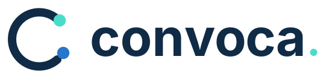

Propósito
Facilitar el encuentro entre programas de formación y personas interesadas en continuar sus estudios.
Manual de identidad de la plataforma de convocatorias y admisiones académicas de la educación superior cubana.
CONVOCA conecta instituciones, programas y aspirantes en una plataforma digital de gestión de convocatorias y admisiones académicas. Forma parte de la familia visual de CONECTA.
Facilitar el encuentro entre programas de formación y personas interesadas en continuar sus estudios.
Plataforma de convocatorias y admisiones de la educación superior.
Clara, confiable, cercana, moderna y rigurosa.
Acceso, transparencia, orden, colaboración y proyección académica.
CONVOCA conserva la tipografía, la paleta y el lenguaje formal de CONECTA. Su isotipo, con dos nodos, identifica específicamente el encuentro entre instituciones y aspirantes.
Una plataforma de RedUniv · Ministerio de Educación Superior de Cuba.
El isotipo se construye a partir de una C abierta y dos nodos: oportunidad y encuentro. El nombre se escribe en minúscula con punto final en la versión gráfica: convoca.

Mantener libre alrededor al menos la mitad de la altura del isotipo, sin textos ni elementos competidores.
Logotipo: 140 px de ancho; isotipo: 24 px mínimo y 32 px recomendado para interfaces.
Principal, inversa, monocromática, isotipo, favicon. Los SVG trazados son ideales para producción; los SVG editables requieren disponer de Inter.
La paleta de CONVOCA reproduce exactamente los códigos de CONECTA v1.0. El azul expresa solidez académica y el menta añade claridad y cercanía tecnológica.
Para texto normal, utiliza azul oscuro sobre blanco y blanco sobre Azul Noche. El color Menta no debe emplearse para textos pequeños sobre fondo blanco sin comprobar contraste.
Inter es la familia principal en títulos, textos, formularios y navegación. IBM Plex Mono complementa el sistema en identificadores, datos técnicos y fragmentos de código.
Principal · Titulares Bold/ExtraBold · Texto Regular · Interfaz Medium/Semibold
Útil para números de solicitud, fechas, reportes, identificadores y metadatos.
H1: 44–52 px en escritorio · H2: 28–32 px · Cuerpo: 16 px / interlineado 1.5 · Botones: 14–16 px Semibold.
Inter: github.com/rsms/inter · IBM Plex: github.com/IBM/plex. El kit contiene enlaces y CSS de integración, no binarios de fuentes.
CONVOCA emplea un lenguaje institucional, claro y orientado a la acción. Ofrece información precisa sobre programas, postulaciones y seguimiento sin prometer resultados de admisión.
Descubre cursos, diplomados, especialidades, maestrías y doctorados. Consulta programas, presenta tu solicitud y sigue el proceso de admisión.
Explorar programasClaro · Cercano · Confiable · Tecnológico · Riguroso
Explorar · Postular · Organizar · Consultar · Acompañar
«Explorar programas», «Soy institución», «Mis solicitudes», «Enviar solicitud», «Consulta los requisitos antes de postular».
La oferta vigente del sitio incluye cursos, diplomados, especialidades, maestrías y doctorados. Convocatorias, becas u otros servicios se anuncian solo si están habilitados y publicados.
Una interfaz coherente permite reconocer CONVOCA en la portada, el acceso institucional, los formularios, los estados de solicitud y las comunicaciones oficiales.
Encuentra programas de posgrado y gestiona tu postulación desde un solo lugar.
Explorar programasSoy instituciónFavicon e isotipo a 16, 32, 192, 512 y 1024 px. Logo principal e inverso en SVG y PNG.
Cabecera 1600 × 500 e imagen OG 1200 × 630. Ambas muestran el eslogan y la firma institucional.
Utilizar Azul Noche para cabeceras y zonas de mayor jerarquía; blanco y Nube para formularios y fichas; Menta para llamadas a la acción; Azul Acción para estados interactivos.
Usar SVG oficiales, respetar proporciones, área de protección y contraste; mantener los colores compartidos con CONECTA.
Utilizar «convoca.» en el logotipo y «CONVOCA» como denominación en textos institucionales.
Deformar el símbolo, cambiar colores por cuenta propia, aplicar sombras no aprobadas o mezclar tipografías ajenas al sistema.
Afirmar que becas, pagos, integraciones externas o modalidades están disponibles sin confirmación funcional.
La plataforma utiliza actualmente el nombre «Nexo» en su portada. Sustituirlo por CONVOCA implica revisar contenido, plantillas de correo, metadatos y referencias visibles, sin modificar IDs ni integraciones internas sin una migración planificada.
Identidad conceptual v1.0 para revisión institucional. La adopción definitiva requiere aprobación y verificación de denominación y marca.